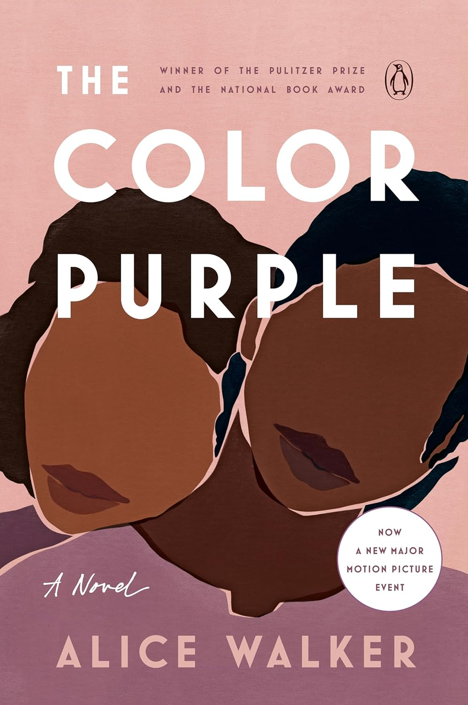

"The Color Purple"
- Read on 2025-11-13
- Rating: ️️️️️
- Format: 🎧 (8 hours 7 minutes)
Wow. I don't know the last time I read a book that felt as open as this. Alice Walker's novel is an epic story of strife, love, relationships, longing, and so much more. I can understand why some might be unsettled by the book, but I also feel like it handles some rather sensitive topics well. For those that want to ban the book, I feel like alternatives aren't necessarily wrong in themselves, or things that should be shunned. Walker doesn't force them, but presents them. At the same time, I could have forgone some of the more graphic details of the book. I don't think it should be required reading, but the voice of the characters (and author) feels unique and worthwhile. And yes, the book moved me to tears.
- Prior: Wild
- Next: Dopamine Nation